Archibald Waller Overton Buchanan Families
Home
Histories
Charts
Photos
Maps
Restricted
News
Info
Contact
| <--(return)-- |  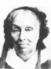 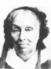John Buchanan - Nancy Ann Bach(e) |
----> | 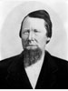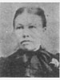 | Archibald Waller Overton Buchanan - Ann Marie Larsen |
| 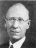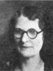 | Osmond Buchanan Married Maria Elizabeth Killian The 1st child of Archibald W. O. and Ann Marie Larsen |
|
Arthur Adelbert Buchanan (unmarried)
The 2nd child of Archibald W. O. and Ann Marie Larsen |
| 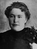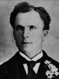 | Castina Maria Buchanan Married Newell Knight Young The 3rd child of Archibald W. O. and Ann Marie Larsen |
| 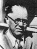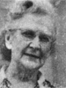 | James Carlos Buchanan Married Gail Johnson The 4th child of Archibald W. O. and Ann Marie Larsen |
| 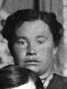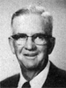 | Ethelyn Buchanan Married Mahonri William Breinholt The 5th child of Archibald W. O. and Ann Marie Larsen |
| 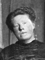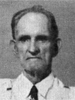 | Nancy Edna Buchanan Married Robert Beecroft The 6th child of Archibald W. O. and Ann Marie Larsen |
| 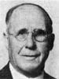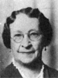 | Jacob Joseph Smith Married Annie Stratton The adopted son of Archibald W. O. and Ann Marie Larsen |
Back to Buchanan Family History web pages.